Advanced Cell Phenotyping
Carissa Chen1 Sharon Long2
Source:vignettes/advancedphenotyping.Rmd
advancedphenotyping.RmdOverview
Description
Cellular phenotyping broadly refers to all procedures that aim to identify the identity and/or state of cells, as well as the relationship between cells. In this section, we discus challenges and the analytical focus associated with cellular phenotyping. The overall learning goals of the workshop is to understand trajectory analysis, a common approach to phenotype continuous cell states or timecourse data. We will also discuss the general analytical strategies associated with phenotyping single cells and future perspectives.
Preparation and pre-reading
Learning objectives
- identify different workflows to build trajectory including calculate pseudo-times
- generate appropriate graphics to visualise the trajectories and expression of genes
- understand the different trajectory characterisation approaches including differentially expressed genes across trajectories
Introduction
Many biological processes manifest as a continuum of dynamic changes and diverse cellular states. One of the major goals of single cell data analysis is to identify and characterize these cell types and states that are induced from external stimulation (such as environmental insults or perturbations), the spatial context, the point along the differentiation system in which a cell lies and more. Collectively, these biological, genetic and environmental factors contribute towards the diversity of the phenotypes we see among cells.
We define the process of phenotyping as any procedure that attempts to further characterize the identity and/or state of cells and the relationship between cells and is distinct from procedures relating to the pre-processing or clustering of the data. One of the most common and basic phenotyping procedure is cell type identification, which is a highly researched topic in single cell data analysis. We can further explore various characteristics of the cells by
- investigating where a cell lies along a trajectory, if the data demonstrates a pseudo-temporally ordered state;
- determining if there are multiple branches in the trajectory (which may associate with different cell type lineages);
- if the previous is true, distinguishing if certain gene expression programs are associated with a certain trajectory through differential expression analysis or gene set enrichment studies; and lastly;
- investigating if a certain signalling patterns can be observed between cell types. Collectively, these efforts contribute towards phenotyping the data and obtaining a more descriptive characterization of the data at hand.
Thus, the question becomes how do we identify the diverse phenotypes? Whilst single cell data enables us to interrogate the heterogeneity among the phenotypes and tease out different and distinct states, a cell’s phenotype is the manifestation of a collective and integrated output of a set of molecules or networks that span across multiple modalities (transcriptome, genome, epigenome, and proteome etc). In this workshop, we begin to investigate this using single-cell transcriptomes, acknowledging at the same time that a single modality alone may not be sufficient to accurately pinpoint all the phenotypes present in the data.
In this workshop, we will demonstrate how to do trajectory analysis using a mouse scRNA-seq dataset of the hippocampus Hochgerner et al. (2018)
Loading libraries and the data
library(slingshot)
library(SingleCellExperiment)
library(scater)
library(ggplot2)
library(ggthemes)
library(ggpubr)
library(reshape2)
library(patchwork)
library(scater)
library(scran)
library(Seurat)
library(ggrastr)
library(tidyverse)
library(ggridges)
library(shiny)
library(DT)
library(Cepo)
library(UpSetR)
library(BiocParallel)
theme_set(theme_bw())
load(file="../data/hippocampus_minimal.rda")
sce <- hippocampus_minimal
rm(hippocampus_minimal)
sce <- logNormCounts(sce)Initial visualisation of the data
We will visualise the data using PCA, t-SNE and UMAP calculated from the previous section of the workshop.
p1 <- plotPCA(sce, colour_by = "cell_cluster", point_size=0.5) + ggtitle("PCA")
p2 <- plotTSNE(sce, colour_by = "cell_cluster", point_size=0.5) + ggtitle("TSNE")
p3 <- plotUMAP(sce, colour_by = "cell_cluster", point_size=0.5) + ggtitle("UMAP")
patchwork::wrap_plots(list(p1 + p2 + p3), guides="collect")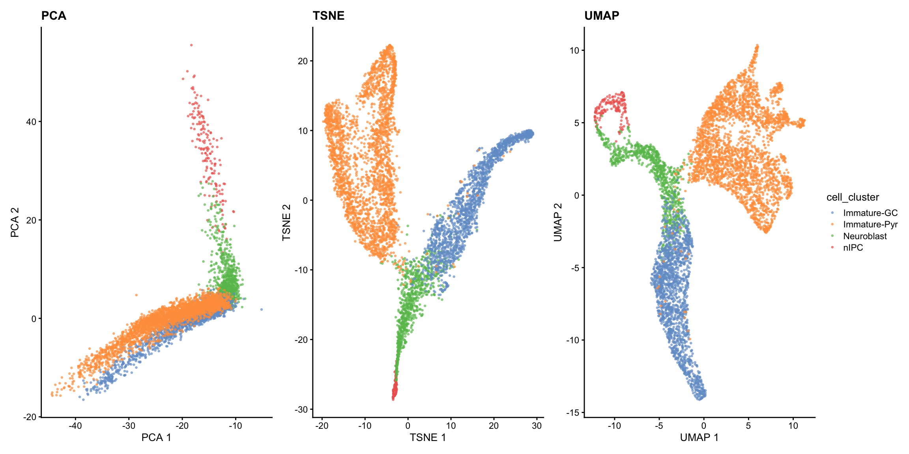
The visualisations suggests the presence of a clear trajectory. Starting from the progenitor cells (neural intermediate progenitor cells (“nIPC”), there is bifurcation of the trajectory into the two major lineages: the immature dentate gyrus granule neurons (“immature-GC”) and immature pyramidal neurons (“Immature-Pyr”).
Trajectory inference: How can I infer the trajectory for my data?
This section contains two parts. The first part focuses on the four key steps of building a trajectory and the second part focuses on quality assessment of the built trajectory.
Building a trajectory
Step 1: Feature selection
One of the first step in building a trajectory is to perform feature selection. Given the high dimensional nature of high throughput single cell data, oftentimes it is advantageous to select for genes that provide biologically relevant information and remove those that add noise to the data. There are many ways to perform feature selection in single cell data, reviewed here.
In this workshop, we demonstrate feature selection using differential stability from Cepo to choose the top 150 cell identity genes for each cell type.
Step 2: Dimensionality reduction
The code below demonstrate using Cepo selected genes to perform PCA.
set.seed(2024)
sce = scater::runPCA(sce, scale = TRUE, subset_row = cepoGenes, name="PCA_Cepo")
plotReducedDim(sce, dimred = "PCA_Cepo", colour_by = "cell_cluster", point_size=0.5) + ggtitle("Cepo_PCA")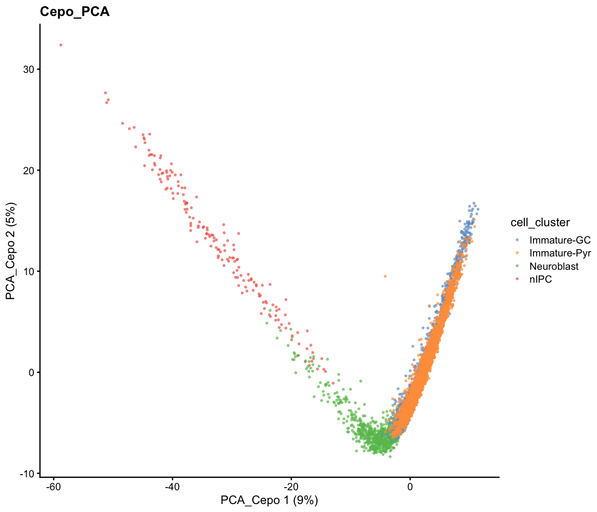
Similarly, there are different dimensionality reduction approaches and we again illustrate the use of t-SNE and UMAP to achieve the same purposes.
set.seed(2024)
sce = scater::runTSNE(sce, dimred = "PCA", name="TSNE_Cepo", BPPARAM= MulticoreParam(workers = 4))
sce = scater::runUMAP(sce, dimred = "PCA", name="UMAP_Cepo", min_dist=0.5, BPPARAM=MulticoreParam(workers = 4))
p2 = plotReducedDim(sce, dimred = "TSNE_Cepo", colour_by = "cell_cluster", point_size=0.5) + ggtitle("Cepo_TSNE")
p3 = plotReducedDim(sce, dimred = "UMAP_Cepo", colour_by = "cell_cluster", point_size=0.5) + ggtitle("Cepo_UMAP")
patchwork::wrap_plots(list(p2, p3), guides="collect")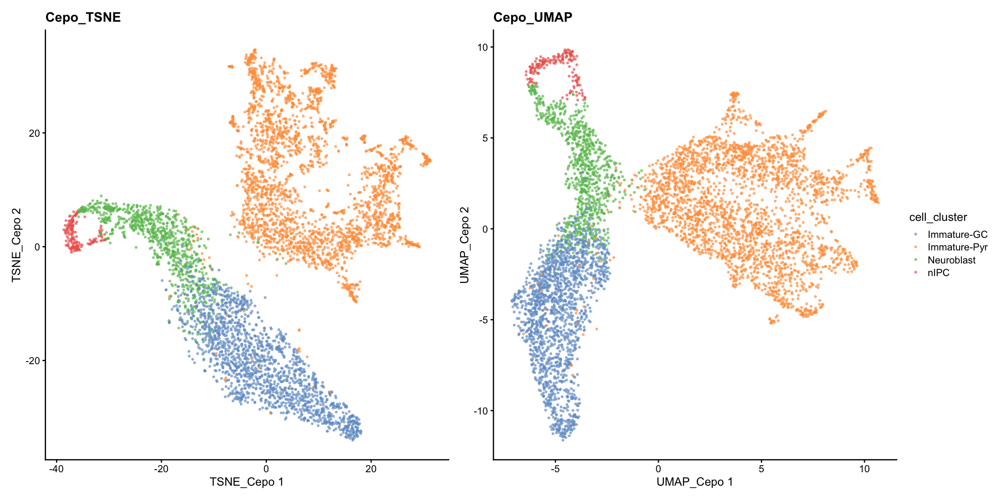
While the PCA looks similar to our previous visualisation using HVGs, we can see from the t-SNE and UMAP that there is greater refinement of the two potential subpopulations within the immature pyramidal cells.
Step 3: Creating a lineage structure and pseudo-time inference
Building the trajectory is to infer and construct the trajectory and steps 3 and 4 are often combined in one function in many methods. Development of trajectory inference methods is actively evolving, and the effectiveness of current trajectory inference tools for transcriptomics data has been extensively reviewed in this benchmarking paper.
In this workshop, we will run slingshot on UMAP reduced dimension space as an example, for which more details of the implementation can be found here. The basic input of slingshot is:
- the expression matrix (as an SCE object),
- cell type labels, and
- the coordinates for the reduced dimensions.
Details: Slingshot implements a two-stage procedure whereby in the first step it infers the global lineage structure using the multi-spanning tree (MST) and then infers the pseudo-time for cells along each lineage by fitting simultaneous “principal curves” across multiple lineages. When known, we can also assign the starting node/cell type (i.e., “nIPC”).
slingshot_umap <- slingshot(sce,
clusterLabels = sce$cell_cluster,
reducedDim = "UMAP_Cepo",
start.clus = "nIPC")Step 4: Visualisation of the trajectory
Visualisation with base R
Let us visualise the slingshot results using the base R
rd <- reducedDim(slingshot_umap, "UMAP_Cepo")
plotcol <- tableau_color_pal("Classic 10")(5)[as.factor(slingshot_umap$cell_cluster)]
# set the aspect ratio for base R plot as 1
par(pty = "s")
plot(rd, col = plotcol,
pch = 16, asp = 1, xlab = "UMAP1", ylab = "UMAP2")
lines(SlingshotDataSet(slingshot_umap), lwd=2, col='black')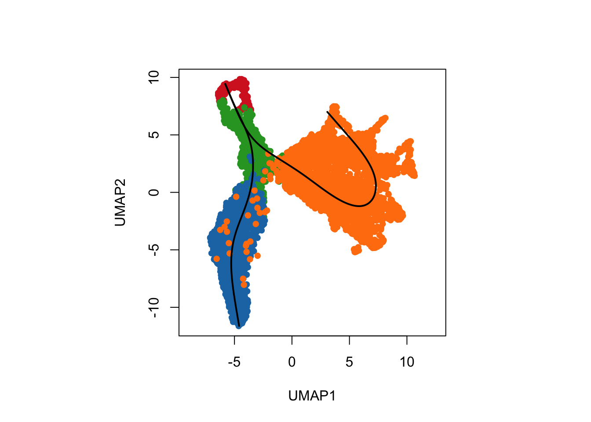
Visualisation the same results using ggplot2.
df_toPlot_umap <- data.frame(UMAP1 = rd[, 1],
UMAP2 = rd[, 2],
ClusterName = slingshot_umap$cell_cluster)
pseudotime_umap <- slingshot::slingPseudotime(slingshot_umap)
df_toPlot_umap <- cbind(df_toPlot_umap, pseudotime_umap)
curves <- slingCurves(slingshot_umap, as.df = TRUE)
ggplot() +
geom_point(data = df_toPlot_umap, aes(x = UMAP1, y = UMAP2, color = ClusterName), size=0.5) +
geom_path(data = curves,
aes(x = UMAP1, y = UMAP2, group = Lineage)) +
scale_color_tableau(palette = "Classic 10") +
theme(aspect.ratio = 1)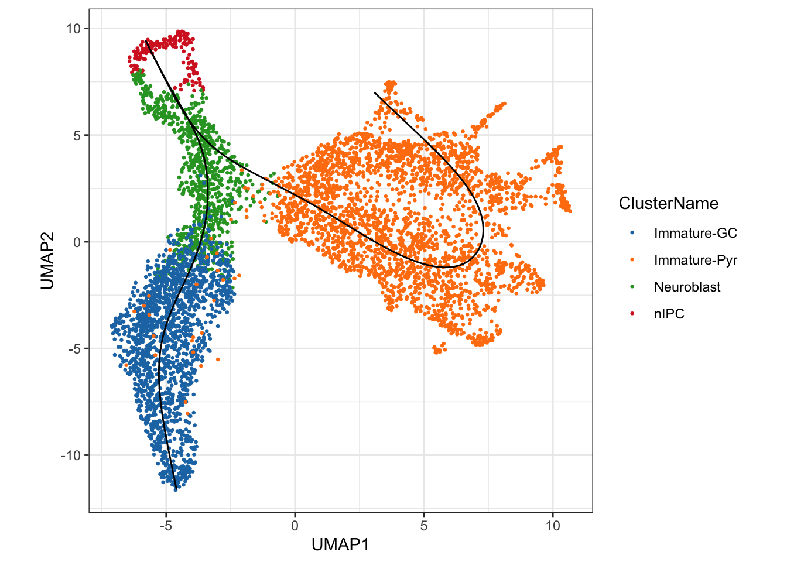
We can see a total of two lineages that has been identified by
slingshot, where we have a trajectory from nIPCs to the
Neuroblast and then it bifurcates at
Neuroblast to give rise to two terminal cell types, the
Immature Granule Cells and
Immature Pyramidal Cells
Visualisation of the inferred pseudotime lineages
A more interesting visualisation would be to see how the pseudotimes
have been inferred for the individual branches. By using the
slingshot::slingPseudotime function, we can access the
inferred pseudotimes for the individual cells for each of the lineages
identified.
## visualising the pseuotime
df_toPlot_umap2 <- reshape2::melt(df_toPlot_umap, id = c("UMAP1", "UMAP2", "ClusterName"))
colnames(df_toPlot_umap2) <- c("UMAP1", "UMAP2", "ClusterName", "Lineages", "Pseudotime")
ggplot() +
geom_point(data = df_toPlot_umap2, aes(x = UMAP1, y = UMAP2, color = Pseudotime)) +
geom_path(data = curves,
aes(x = UMAP1, y = UMAP2, group = Lineage)) +
scale_color_viridis_c() +
theme(aspect.ratio = 1) +
facet_wrap(~Lineages)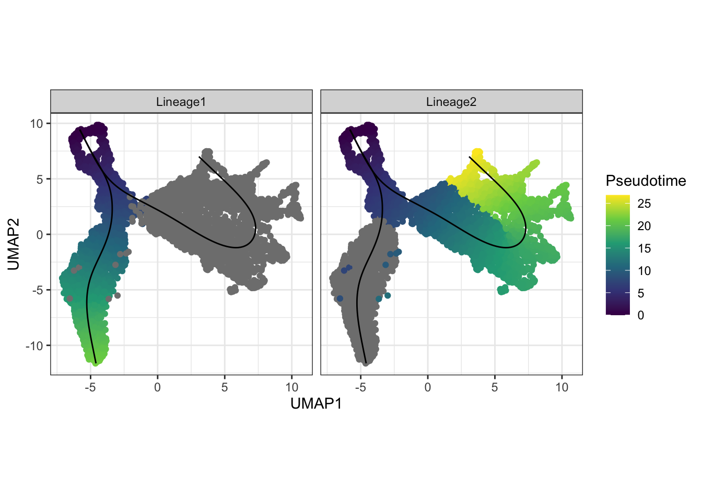
Visualisation of the density of cells along the pseudotime
Using the frequency of cells identified along the above pseudotime,
we can also visualise the density of cells for each cell type along the
two lineages using the geom_density_ridges2 function.
ggplot() +
geom_density_ridges2(data = df_toPlot_umap2,
aes(x = Pseudotime, y = ClusterName, fill = ClusterName),
alpha = 0.5) +
scale_fill_tableau(palette = "Classic 10") +
theme(aspect.ratio = 1, legend.position = "bottom") +
facet_wrap(~Lineages)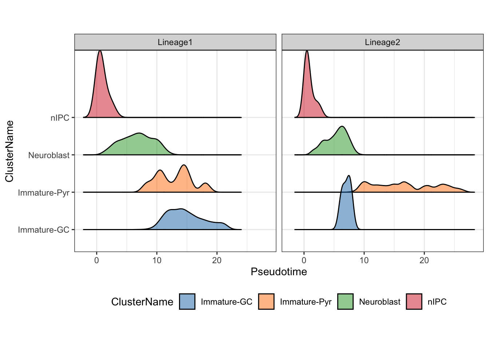
For users wanting to explore alternative methods to build the trajectory, please refer to the dynverse framework, which provides a uniform interface to run more than 50 trajectory inference methods.
Discussion:
- Do these orderings make sense given the cluster labels? Why?
- Would specifying starting cluster (
start.clus) or not impact our trajectory results? - As an additional exercise, would performing dimensionality reduction with a different set/number of selected features impact the trajectory results? What if you try a different dimensionality reduction technique?
Is my trajectory appropriate or sensible?
In this section, we will look at the critical thinking questions that a researcher will ask about the trajectory.
How well do the pseudotime orderings correlate from different trajectory methods?
As an example to illustrate the concordance between the results from
running two different trajectory inference methods, here we will use
monocle3 to construct the trajectory on the same UMAP space
and compare it against the results from slingshot.
The black lines show the structure of the graph. The circles with numbers in them denote special points within the graph. Each leaf, denoted by light gray circles, corresponds to a different outcome (i.e. cell fate) of the trajectory. Black circles indicate branch nodes, in which cells can travel to one of several outcomes. You can control whether or not these are shown in the plot with the label_leaves and label_branch_points arguments to plot_cells. Note that numbers within the circles are provided for reference purposes only.
library(monocle3)
# Construct cell data set object for monocle3
rowData(sce) <- DataFrame(rowData(sce), gene_short_name = rownames(sce))
cds <- as(sce, "cell_data_set")
colData(cds)[, 1] <- NULL
cds <- cluster_cells(cds, cluster_method = "leiden")
# plot_cells(cds, color_cells_by = "partition")
cds <- learn_graph(cds, use_partition = FALSE, close_loop=FALSE, verbose=TRUE) # set use_partition to FALSE so only a single graph is learnt
plot_cells(cds, reduction_method = "UMAP",
color_cells_by = "cell_cluster", label_groups_by_cluster=FALSE,
group_label_size = 4, graph_label_size = 4) +
scale_color_tableau(palette = "Classic 10") +
theme(aspect.ratio = 1)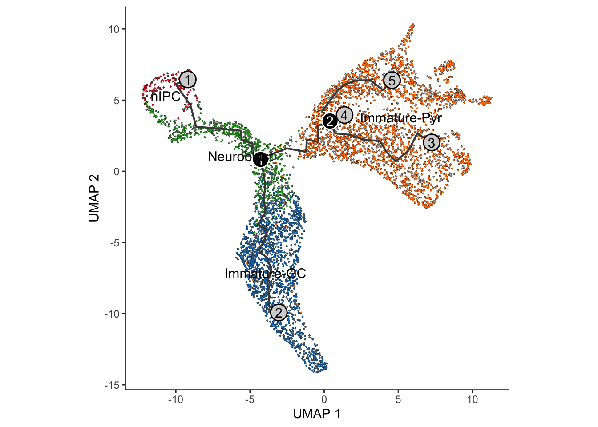
Interpretation:
Similar to the approach using slingshot, visualisation
of the monocle3 approach shows two distinct lineages,
replicating the bifurcation point at the Neuroblast.
Are the trajectory methods robust to the choice of “root cells”?
We can now calculate the pseudotimes. Note that it is important to
set the cell type of origin (i.e., the cell type denoting the earliest
temporal point of the differentiation when calculating pseudotimes. For
monocle3, we will need to provide the
root_cells, which requires us to specify a set of cells
from the root cell type. By creating a customised function
get_earliest_principal_node to do this, we can arbitrarily
assign a set of cell from the cell type of origin as our
root_cells.
It’s often desirable to specify the root of the trajectory programmatically, rather than manually picking it. The function below does so by first grouping the cells according to which trajectory graph node they are nearest to. Then, it calculates what fraction of the cells at each node come from the earliest time point. Then it picks the node that is most heavily occupied by early cells and returns that as the root.
get_earliest_principal_node <- function(cds, coldata_name, start.clust){
cell_ids <- which(colData(cds)[, coldata_name] == start.clust)
closest_vertex <- cds@principal_graph_aux[["UMAP"]]$pr_graph_cell_proj_closest_vertex
closest_vertex <- as.matrix(closest_vertex[colnames(cds), ])
root_pr_nodes <- igraph::V(principal_graph(cds)[["UMAP"]])$name[as.numeric(names(which.max(table(closest_vertex[cell_ids,]))))]
root_pr_nodes
}
# Set the root cells
root_cells <- get_earliest_principal_node(cds, coldata_name = "cell_cluster",
start.clust = "nIPC")
# Order the cells to calculate pseudotime
cds <- order_cells(cds, root_pr_nodes = root_cells)
plot_cells(cds,
color_cells_by = "pseudotime",
label_cell_groups = FALSE,
# label_leaves = FALSE,
# label_branch_points = FALSE,
graph_label_size = 4, group_label_size = 4) +
theme(aspect.ratio = 1)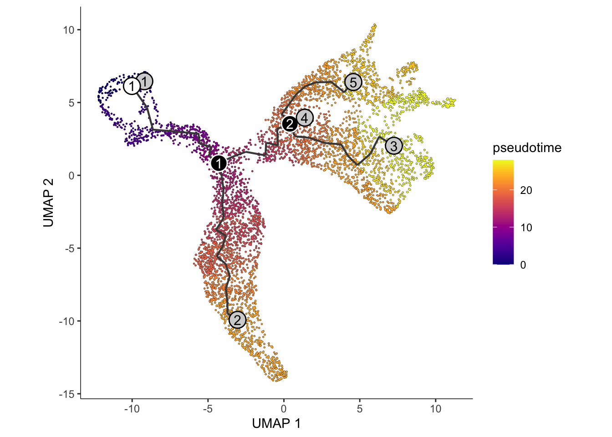
monocle3_pseudotime <- cds@principal_graph_aux[["UMAP"]]$pseudotimeWe can evaluate the concordance in pseudotimes inferred across the
two trajectory inference methods, slingshot and
monocle3 by calculating a simple pearson’s correlation. Are
you satisfied with the agreement?
par(pty = "s")
plot(monocle3_pseudotime, pseudotime_umap[, 1], xlab = "Monocle 3", ylab = "Slingshot (Lineage 1)")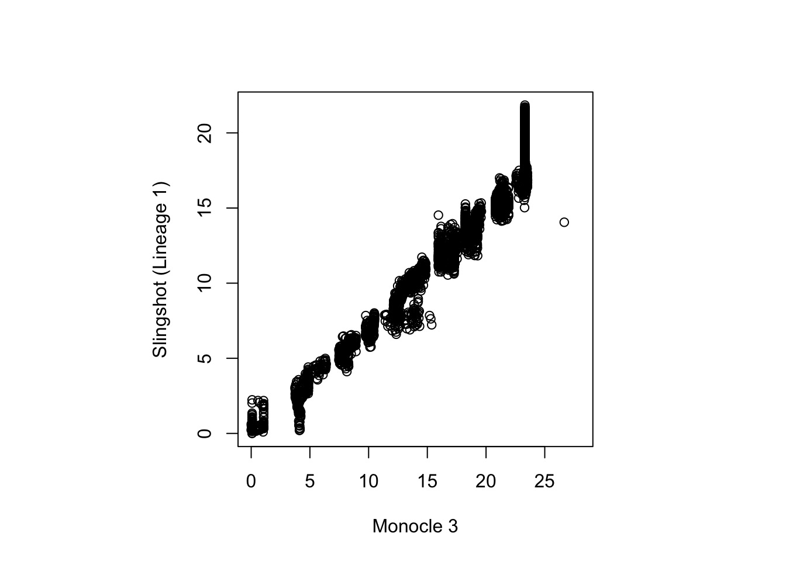
cor(monocle3_pseudotime, pseudotime_umap[, 1], use = "complete.obs")
#> [1] 0.9776447Discussion:
- Can we use
order_cellsinmonocle3if we do not know what therootcell type is?
How can I characterise the trajectory of the data?
So far, we have built a trajectory from our mouse hippocampus data using the transcriptomes of single cells. During this process, we determined the presence of two distinct lineages in the trajectory that was in line with the underlying biological system, and investigated the impact of using different dimensionality reduction techniques and different methods of trajectory inference.
We can now being to further phenotype the trajectories by investigating the changes in the specific gene expressions programs across and between lineages. We will ask the following questions:
- Within a lineage, which genes are differentially expressed across a pseudotime?
- Which genes exhibit different patterns of gene expression across the pseudotime between lineages?
- Can we group the genes in terms of their gene expression patterns across the pseudotime?
- Are specific pathways or gene sets enriched in these gene groups?
- Which gene-pair correlations change across lineages?
Within a lineage, which genes are differentially expressed across a pseudotime?
Background: A suitable statistical model for determining which gene expression is related to pseudotime is the generalise additive model. A generalised additive model (GAM) in statistics is a generalised linear model in which the linear response variable is linearly dependent on unknown smooth functions of certain predictor variables. GAMs can be thought of as a bridge between simple linear models and advanced machine-learning techniques, allowing researchers to model non-linear data or more complex systems. In GAM, inference on smooth functions is frequently the main focus. The GAM model is typically written as \[ y = \beta_0 + f(t) + \epsilon; \epsilon \sim N(0,\sigma^2)\] where \(t\) represents the pseudotime.
The approach tradeSeq Berge et al.,
2020 implement a negative bionomial-GAM (NA-GAM) model to detect
genes that are differentially expressed along one or multiple lineages
in a trajectory. The NB-GAMS model can be fitted using the functions in
tradeSeq. Here the choice of knot number
is an important model parameters. This parameter specifies how complex
the data expression patterns are, with a higher number of knots allowing
for more intricate expression patterns. The most optimal choice of knots
can be derived from using the evaluateK function. If your
data contains many conditions, use the conditions option to
fit individual smoothers for each condition.
Computation: In the interest of time, we suggest performing this analysis using
- the set of differentially stable genes (450 genes) derived earlier in this workshop; and
- set `knots = 6` when fitting the NB-GAM. This component is computationally intensive, and the ‘fitGAM’ process, as seen below, will take about ten minutes to complete. As an alternative, we recommend completing the rest of this tutorial with the pre-run output.
library(tradeSeq)
slingshot_umap <- slingshot_umap[!duplicated(rownames(slingshot_umap)),]
if (!file.exists("../data/slingshot_umap.rda")) {
slingshot_umap <- fitGAM(slingshot_umap,
genes = cepoGenes,
nknots = 6,
verbose = TRUE,
parallel = FALSE,
sce = TRUE,
family = "nb",
gcv = FALSE)
save(slingshot_umap, file = "../data/slingshot_umap.rda")
} else {
load(file="../data/slingshot_umap.rda")
}
table(rowData(slingshot_umap)$tradeSeq$converged)
#>
#> TRUE
#> 567Test for association
Next, using the fitted gene expressions, we can assess for
significant changes in gene expression (i.e., differential expression)
as a function of pseudotime within each lineage using the
associationTest function. Importantly, setting
lineages = TRUE will specify that the differential
expression analysis should be performed for each lineage separately, as
well as performing the test across all lineages simultaneously. Here, we
will only focus on perform the association test on the Cepo selected
genes.
assoRes <- associationTest(slingshot_umap[cepoGenes, ], global = TRUE, lineages = TRUE)
assoRes <- assoRes[order(assoRes$waldStat, decreasing = TRUE),]
datatable(assoRes) %>%
formatSignif(which(sapply(assoRes, is, 'numeric')), digits = 3)
## extracting candidate from each lineage
lineage1Genes <- rownames(assoRes)[which(p.adjust(assoRes$pvalue_1, "fdr") <= 0.05)]
lineage2Genes <- rownames(assoRes)[which(p.adjust(assoRes$pvalue_2, "fdr") <= 0.05)]
allGenes <- rownames(assoRes)[which(p.adjust(assoRes$pvalue, "fdr") <= 0.05)]
DEgenes = list(
lineage1 = lineage1Genes,
lineage2 = lineage2Genes
)
sapply(DEgenes, length)
#> lineage1 lineage2
#> 282 287We will use the UpSetR package to visualise the number
of intersecting and exclusive genes.
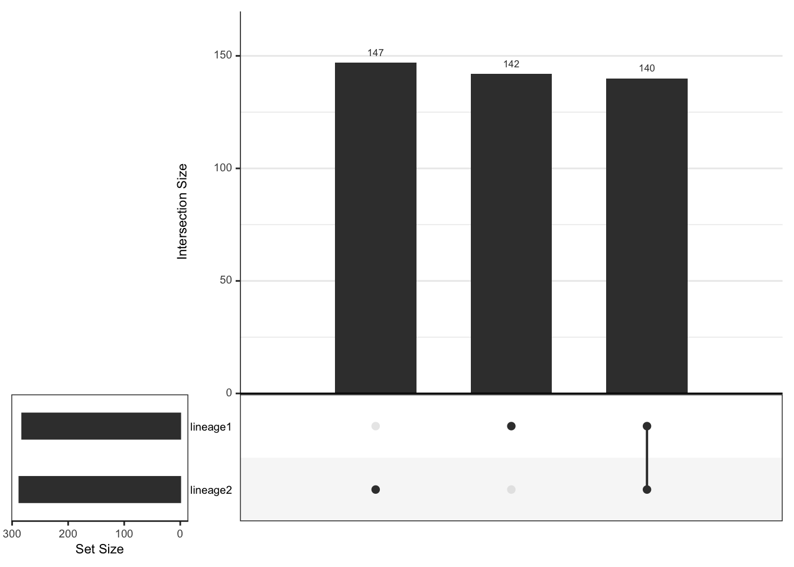
length(setdiff(lineage1Genes, lineage2Genes))
#> [1] 142
length(setdiff(lineage2Genes, lineage1Genes))
#> [1] 147
length(intersect(lineage1Genes, lineage2Genes))
#> [1] 140
plotSmoothers(slingshot_umap, counts(slingshot_umap), gene = c("RUNX1T1"))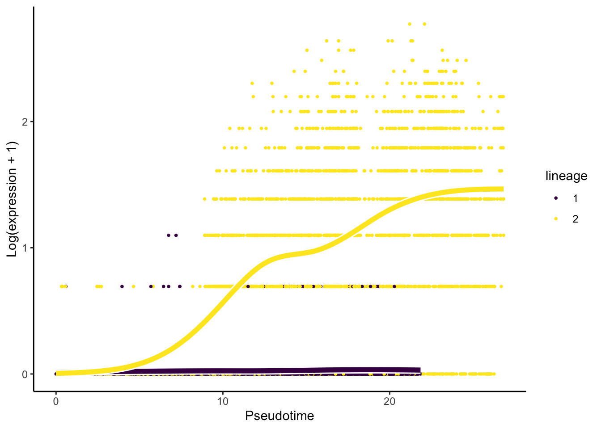
Interpretation:
- Based on the upset graphics, we see there is a large overlap in DE genes between the three lineages (around 93%).
- From the pseudotime graph, we can check whether the expression of an
identified DE gene indeed change over pseudotime within each lineage. As
an example, we select
RUNX1T1, a gene that has been found to be differentially expressed for the two lineages.
Which genes exhibit different patterns of gene expression across the pseudotime between lineages?
Whilst the associationTest looks for genes that show
differential expression across a pseudotime within a lineage, we can
also look for genes that demonstrate different differential expression
patterns across lineages through the patternTest function.
This is accomplished by testing whether the expression pattern of each
gene varies between lineages. As previously, we will only focus on
running the pattern test on the Cepo-selected genes.
patternRes <- patternTest(slingshot_umap[cepoGenes,])
patternRes <- patternRes[order(patternRes$waldStat, decreasing = TRUE),]
datatable(patternRes) %>%
formatSignif(which(sapply(patternRes, is, 'numeric')), digits = 3)
## determine the number of candidate genes
patternGenes <- rownames(patternRes)[which(p.adjust(patternRes$pvalue, "fdr") <= 0.05)]
length(patternGenes)
#> [1] 454
## Assessing our results through visualization
plotSmoothers(slingshot_umap, counts(slingshot_umap), gene = c("SYT4"))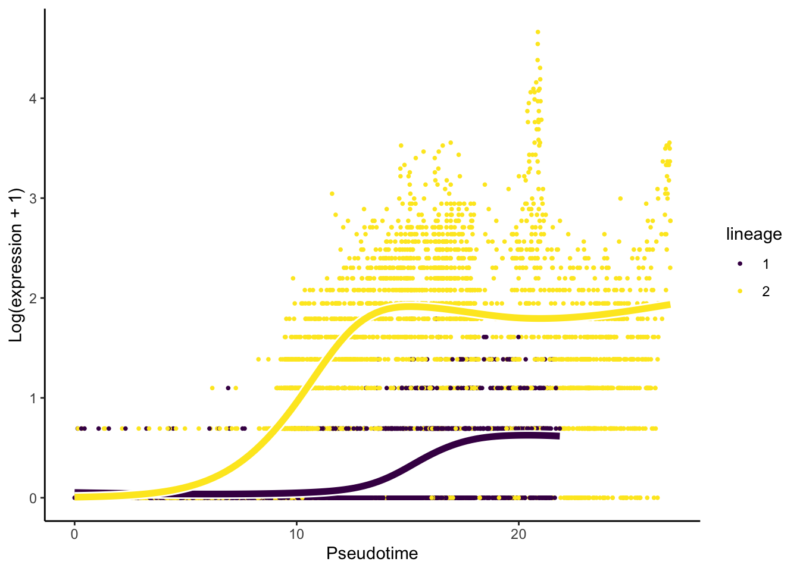
Interpretation:
- We have 454 of 567 genes demonstrate differential gene expression patterns between lineages.
- It is critical, like with any omics data study, to double-check our
results using visualisation. For this question, we will visualise the
change in the expression of the most important gene,
SYT4.
Can we group the genes in terms of their gene expression patterns across the pseudotime?
Hypothesis testing (‘patternTest’) generates a value describe the
degree to which a gene’s expression as a function of pseudotime is
distinct across lineages; however, it does not capture the diversity of
pseudotime patterns among these genes. To this end, we can further
cluster genes according to their expression pattern along the pseudotime
for each lineage using the clusterExpressionPattern
function from the tradeSeq package. The resulting
output is a clustering label that denotes gene groups based on like
gene expression profiles.
Computation:
The main arguments of the function are
1) the slingshot output,
2) `nPoints` which denotes the number of points along each lineage to cluster the genes, and
3) the `genes` to use in the clustering. More details of the implementation can be found in [this vignette](https://statomics.github.io/tradeSeq/articles/tradeSeq.html).Note that the clustering uses the clusterExperiment package (Risso et
al. 2018), hence the user may select any clustering algorithm that’s
built into that package (check the output of
clusterExperiment::listBuiltInFunctions() on the command
line to see available methods). clusterExpressionPatterns
take a few minutes to run in our case, you can load our pre-run results
instead.
library(clusterExperiment)
nPointsClus <- 20
if (!file.exists("../data/clusPat.rda")) {
clusPat <- tradeSeq::clusterExpressionPatterns(slingshot_umap, nPoints = nPointsClus,
genes = rownames(patternRes))
save(clusPat, file="../data/clusPat.rda")
} else {
load(file="../data/clusPat.rda")
}
clusterLabels <- clusterExperiment::primaryCluster(clusPat$rsec)The clustering results generated from running the
clusterExpressionPatterns function shows a total 52
clustering groups with 98 genes that have not been assigned to a cluster
and may demonstrate unique gene expression patterns. We will also
visualise the normalised expression patterns of genes from three
clusters.
table(clusterLabels)
#> clusterLabels
#> -1 1 2 3 4 5 6 7 8 9 10 11 12 13 14 15 16 17 18 19 20 21 22 23 24 25
#> 89 70 33 28 28 25 23 17 31 14 14 13 13 11 10 9 9 8 8 8 8 8 7 7 7 7
#> 26 27 28 29 30 31 32 33 34 35 36
#> 6 6 6 6 6 6 6 5 5 5 5
ggCluster <- list()
for (xx in 1:4) {
cId <- which(clusterLabels == c(1,2,3,4)[[xx]])
p <- ggplot(data = data.frame(x = 1:nPointsClus,
y = rep(range(clusPat$yhatScaled[cId, ]),
nPointsClus / 2)),
aes(x = x, y = y)) +
geom_point(alpha = 0) +
labs(title = paste0("Cluster", c(1,2,3,4)[[xx]]), x = "Pseudotime", y = "Normalized expression") +
theme_classic() +
theme(plot.title = element_text(hjust = 0.5))
for (ii in 1:length(cId)) {
geneId <- rownames(clusPat$yhatScaled)[cId[ii]]
p <- p +
geom_line(data = data.frame(x = rep(1:nPointsClus, 2),
y = clusPat$yhatScaled[geneId, ],
lineage = rep(1:2, each = nPointsClus)),
aes(col = as.character(lineage), group = lineage), lwd = 1.5)
}
ggCluster[[xx]] <- p + guides(color = "none") +
scale_color_manual(values = c("orange", "darkseagreen3"),
breaks = c("1", "2"))
}
patchwork::wrap_plots(ggCluster, ncol = 4, nrow = 1)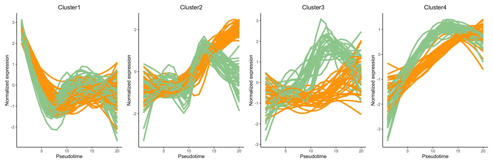
Discussion:
Can you describe the various expression patterns? Note that there are two layers of differences: genes show (1) differential expression across a pseudotime within a lineage and (2) these differential expression patterns are significantly different between lineages.
Would setting a greater number of
nPoints(e.g., 40, 60, 80) change the clustering results?
What is the functional annotation for the various gene sets?
To establish the functional annotation of the various clusters of genes obtained, it is similar to identifying whether specific pathways or gene sets is enriched in these clusters of genes. Here, we perform gene set over-representation (GO) analysis and illustrate this analysis by identify gene ontology gene sets that are over-represented in cluster 1 (70 genes). The results is shown in a table.
names(clusterLabels) <- rownames(clusPat$yhatScaled)
names(clusterLabels) <- rowData(sce)$gene_name[match(names(clusterLabels), rownames(sce))]
library(clusterProfiler)
library(org.Mm.eg.db)
eg <- bitr(names(clusterLabels)[clusterLabels == 1],
fromType = "SYMBOL",
toType = "ENTREZID",
OrgDb = "org.Mm.eg.db")
geneList <- bitr(rowData(sce)$gene_name,
fromType = "SYMBOL",
toType = "ENTREZID",
OrgDb = "org.Mm.eg.db")
ego_res <- enrichGO(gene = eg$ENTREZID,
universe = geneList$ENTREZID,
OrgDb = org.Mm.eg.db,
ont = "BP",
pAdjustMethod = "BH",
minGSSize = 50,
maxGSSize = 200,
pvalueCutoff = 1,
qvalueCutoff = 1,
readable = TRUE)
## generate results
head(as.data.frame(ego_res))
#> ID Description
#> GO:0000070 GO:0000070 mitotic sister chromatid segregation
#> GO:1902850 GO:1902850 microtubule cytoskeleton organization involved in mitosis
#> GO:0007051 GO:0007051 spindle organization
#> GO:0051983 GO:0051983 regulation of chromosome segregation
#> GO:0051310 GO:0051310 metaphase chromosome alignment
#> GO:0007052 GO:0007052 mitotic spindle organization
#> GeneRatio BgRatio pvalue p.adjust qvalue
#> GO:0000070 26/65 169/20311 8.629563e-38 2.934051e-35 1.916671e-35
#> GO:1902850 22/65 152/20311 3.246372e-31 5.518832e-29 3.605181e-29
#> GO:0007051 22/65 182/20311 2.113668e-29 2.395490e-27 1.564856e-27
#> GO:0051983 20/65 127/20311 3.923134e-29 3.334664e-27 2.178372e-27
#> GO:0051310 17/65 86/20311 1.338809e-26 9.103901e-25 5.947131e-25
#> GO:0007052 18/65 119/20311 6.867068e-26 3.891338e-24 2.542020e-24
#> geneID
#> GO:0000070 Aurkb/Birc5/Ccnb1/Cdca8/Cdk1/Cenpe/Cenpk/Cit/Fbxo5/Incenp/Kif11/Kif22/Kif23/Kif2c/Kifc1/Mad2l1/Ncapg/Nuf2/Nusap1/Plk1/Prc1/Spag5/Spc24/Spc25/Tpx2/Ttk
#> GO:1902850 Aurka/Aurkb/Birc5/Ccnb1/Cdca8/Cdk1/Cenpe/Cenph/Gpsm2/Incenp/Kif11/Kif23/Kifc1/Mad2l1/Nuf2/Nusap1/Plk1/Prc1/Sapcd2/Spc25/Tacc3/Tpx2
#> GO:0007051 Aspm/Aurka/Aurkb/Birc5/Ccnb1/Ccnb2/Cdca8/Cenpe/Cenph/Fbxo5/Gpsm2/Incenp/Kif11/Kif23/Kifc1/Nuf2/Plk1/Prc1/Spag5/Spc25/Tacc3/Tpx2
#> GO:0051983 Aurkb/Birc5/Ccnb1/Cdca2/Cdca8/Cdk1/Cenpe/Cit/Fbxo5/Incenp/Kif2c/Mad2l1/Mki67/Ncapg/Nuf2/Plk1/Spc24/Spc25/Tacc3/Ttk
#> GO:0051310 Aurkb/Birc5/Ccnb1/Cdca8/Cenpe/Cenpf/Cenpq/Ect2/Fam83d/Incenp/Kif22/Kif2c/Kifc1/Nuf2/Spag5/Spc24/Spc25
#> GO:0007052 Aurka/Aurkb/Birc5/Ccnb1/Cdca8/Cenpe/Cenph/Gpsm2/Incenp/Kif11/Kif23/Kifc1/Nuf2/Plk1/Prc1/Spc25/Tacc3/Tpx2
#> Count
#> GO:0000070 26
#> GO:1902850 22
#> GO:0007051 22
#> GO:0051983 20
#> GO:0051310 17
#> GO:0007052 18The clusterProfiler::dotplot function can be used to
visualise the results for the top significant pathways as a dot plot
where the size of the circle represents the number of genes identified
for the pathway of interest and the color of the function denotes the
level of significance.
clusterProfiler::dotplot(ego_res)
Discussion:
- What are the top enriched pathways from the gene set over-representation analysis?
- Are the pathways in line with what you expect?
[Optional] Which gene-pair correlations change across lineages?
In the previous four questions, the focus is to identify a candidate
gene interest. Here we aim to identify candidate “gene-pair”. This is
achieve using an algorithm called scHOT Ghzanfar et
al., 2020, where we can further test the change in gene expression
of a pair of genes across a pseudotime. In the R
package, there are two statistical higher order testing we can perform,
controlled by the higherOrderFunction argument in
scHOT. We can test for differential
variability or differential correlation
between pairs of genes across the pseudotime. 1) variability:
higherOrderFunction = matrixStats::weightedVar 2)
correlation:
higherOrderFunction = matrixStats::weightedSpearman
Computation: To reduce computation time, we will
select the top 10 genes identified from
associationTest.
library(scHOT)
first_branch_cells <- !is.na(slingshot_umap$slingPseudotime_1)
assoRes_lingeage1_top10 <- rownames(assoRes[order(assoRes$waldStat_1, decreasing = TRUE),])[1:10]
gene_to_test <- t(combn(assoRes_lingeage1_top10, 2))To identify gene pairs that are differential correlated across the pseudotime for each lineage, we visualise the results of the top 5 significant gene pairs that demonstrate differential correlation across our pseudotime.
if(!file.exists("../data/scHOT_obj.rda")) {
scHOT_obj <- scHOT_buildFromMatrix(
mat = logcounts(slingshot_umap)[,first_branch_cells],
cellData = list(pseudotime = slingshot_umap$slingPseudotime_1[first_branch_cells]),
positionType = "trajectory",
positionColData = "pseudotime")
scHOT_obj
scHOT_obj <- scHOT(scHOT_obj,
testingScaffold = gene_to_test,
nrow.out = 100, # The number of weightings to include for testing, a smaller value is faster for computation
higherOrderFunction = weightedSpearman,
higherOrderFunctionType = "weighted",
numberPermutations = 50)
scHOT_obj@scHOT_output <- scHOT_obj@scHOT_output[order(scHOT_obj@scHOT_output$FDREstimated),]
save(scHOT_obj, file ="../data/scHOT_obj.rda")
} else {
load(file="../data/scHOT_obj.rda")
}
plotHigherOrderSequence(scHOT_obj, rownames(scHOT_obj@scHOT_output)[1:5])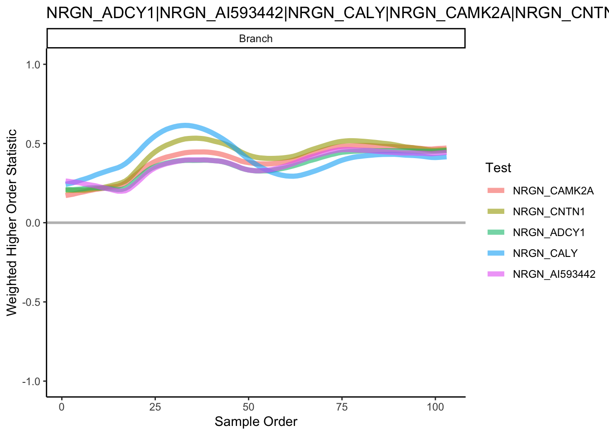
Reference and other useful resources
- dynverse, a collection of R packages aimed at supporting the trajectory inference: https://dynverse.org